2022.08.26
数据在功能部件之问传送的路径称为数据通路，包括数据通路上流经的部件，如 ALU、通用寄存器、状态奇存器、异常和中断处理逻辑等。数据通路描述了信息从什么地方开始，中间经过哪个寄存器或多路开关，最后传送到哪个寄存器，这些都需要加以控制。
数据通路由控制部件控制，控制部件根据每条指令功能的不同生成对数据通路的控制信号。数据通路的功能是实现 CPU 内部的运算器与寄存器及寄存器之间的数据交换．
数据通路的基本结构主要有以下几种：
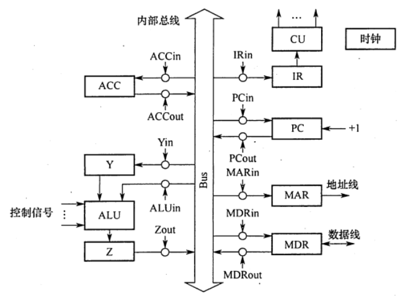
在上图中，规定各部件用大写字母表示，字母加 “in”表示该部件的允许输入控制信号；字母加“out”表示该部件的允许输出控制信号。
注意：内部总线是指同一部件，如CPU 内部连接各寄存器及运算部件之问的总线；系统总线是指同一台计算机系统的各部件，如CPU、内存、通道和各类 I/0 接口间互相连接的总线
奇存器之间的数据传送可通过 CPU 内部总线完成。在上图中，某寄存器 AX 的输出和输入分别由 AXout 和 AXin 控制。这里以PC 寄存器为例，把PC 内容送至 MAR，实现传送操作的 流程及控制信号为
PC->Bus // PCout有效, PC内容送总线
Bus->MAR // MARin有效, 总线内容送MAR
主存与 CPU 之间的数据传送也要借助 CPU 内部总线完成。现以CPU 从主存读取指令为何说明数据在数据通路中的传送过程。实现传送操作的流程及控制信号为：
PC->Bus->MAR // PCout, MARin有效
1->R // CU发读指令
MEM(MAR)->MDR // MDRin有效
MDR->Bus->IR // MDRout, IRin有效
执行算术或逻辑操作时，由于 ALU 本身是没有内部存储功能的组合电路，因此如要执行加法运算，相加的两个数必须在 ALU 的两个输入端同时有效。上图中的暂存器 Y 即用于该目的。先将一个操作数经CPU 内部总线送入暂存器 Y 保存，Y 的内容在 ALU 的左输入端始终有效，再将另一个操作数经总线直按送到 ALU 的右输入域。这样两个操作数都送入ALU运算结果暂存在暂存器Z中。
Ad(IR)->Bus->MAR // MDRout, MARin有效
1->R // CU发读指令
MEM->数据线->MDR
MDR->Bus->Y // MDRout, Yin有效
(ACC)+(Y)->Z // ACCout, ALUin有效
Z->ACC // Zout, ACCin有效
【答案】：C
【答案】：A->D。由于 ALU 是一个组合逻辑电路，因此其运算过程中必须保持两个输入端的内容不变。又由于 CPU 内部采用单总线结构，因此为了得到两个不同的操作数，ALU 的一个输入端与总线相连，另一个输入端需通过一个寄存器与总线相连。此外，ALU 的输出端也不能直接与内部总线相连，否则其输出又会通过总线反馈到输入端，影响运算结果，因此输出端需通过一个暂存器〔用来暂存结果的寄存器）与总线相连。
【答案】：D
【答案】：D
【答案】：C->A。单周期处理器是指所有指令的指令周期为一个时钟周期的处理器，D正确。因为每条指令的CPI 为1，要考虑比较慢的指令，所以处理器的时钟频率较低，B正确。单总线数据通路将所有寄存器的输入输出端都连接在一条公共通路上，一个时钟内只允许一次操作，无法完成指令的所有操作，A 错误。控制信号是CU 根据指令操作码发出的信号，对于单周期处理器来说，每条指令的执行只有一个时钟周期，而在一个时钟周期内控制信号并不会变化；若是多周期处理器，则指令的执行需要多个时钟周期，在每个时钟周期控制器不会发出不同信号。
【答案】：C
MDRinE 为 1表示允许数据从DB 打入 MDR, MDRin 为1表示允许数据从总线打入MDR。假设MAR 的输出一直处于使能状态。加法指令 “ADD (RI), RO”的功能为(R0)+((R1))->(R1)，即将RO 中的数据与 R1 的内容所指主存单元的数据相加，并将结果送入R1的内容所指主存单元中保存。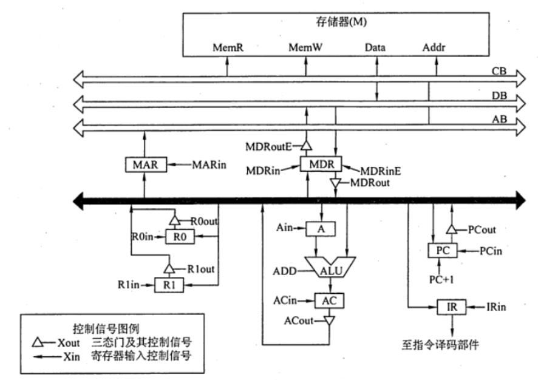
下表给出了上述指令取指和译码阶段每个节拍（时钟周期）的功能和有效控制信号，请按表中描述方式用表格列出指令执行阶段每个节拍的功能和有效控制信号
| 时钟 | 功能 | 有效控制信号 |
|---|---|---|
| C1 | (PC)->MAR |
PCout, MARin |
| C2 | M(MAR)->MDR; (PC)+1->PC |
MemR, MDRin, PC+1 |
| C3 | (MDR)->IR |
MDRout, IRin |
| C4 | 指令译码 | 无 |
【答案】：
| 时钟 | 功能 | 有效控制信号 |
|---|---|---|
| C5 | (R1)->MAR |
R1out, MARin |
| C6 | M(MAR)->MDR |
MemR, MDRin |
| C7 | MDR->A |
MDRout, Ain |
| C8 | (R0)+(A)->AC |
R0out, Aout, ACin |
| C9 | AC->MDR |
ACout, MDRin |
| C10 | MDR->M(MAR) |
MemW, MDRout |
ADD R1, (R2)的微操作序列（取指令及确定后继指令地址）。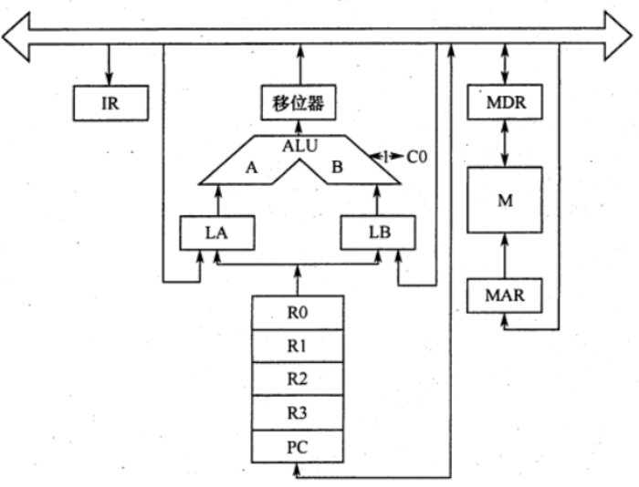
【答案】：
| 功能 | 有效控制信号 |
|---|---|
(PC)->MAR |
PCout, MARin |
M(MAR)->MDR;(PC)+1->PC |
MR, MDRin, PC+1 |
(MDR)->IR |
MDRout, IRin |
(R2)->MAR |
PCout, MARin |
M(MAR)->MDR |
MR, MDRin |
(MDR)->LA |
MDRout, LAin |
(R1)->LB |
R1out, LBin |
(LA)+(LB)->R1 |
+, 移位器out, R1in |
ADD B, C ;(B)+(C)->B
SUB ACC, H ;(ACC)-(H)->ACC
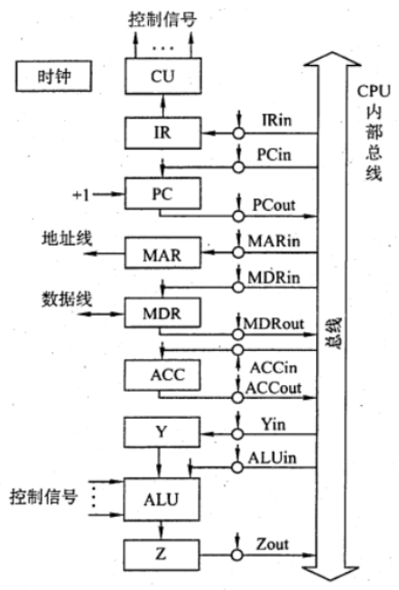
【答案】：
| 功能 | 有效控制信号 |
|---|---|
| ADD B, C | |
(PC)->MAR |
PCout, MARin |
M(MAR)->MDR;(PC)+1->PC |
MR, MDRin, PC+1 |
(MDR)->IR |
MDRout, IRin |
(B)->Y |
Bout, Yin |
(Y)+(C)->Z |
Yout, Cout, Zin, 加 |
(Z)->B |
Zout, Bin |
| SUB ACC, H | |
(PC)->MAR |
PCout, MARin |
M(MAR)->MDR;(PC)+1->PC |
MR, MDRin, PC+1 |
(MDR)->IR |
MDRout, IRin |
(ACC)->Y |
ACCout, Yin |
(Y)-(H)->Z |
Yout, Hout, Zin, 减 |
(Z)->ACC |
Zout, ACCin |
设有如下图所示的单总线结构，分析指令 ADD (R0),R1 的指令流程和控制信号。
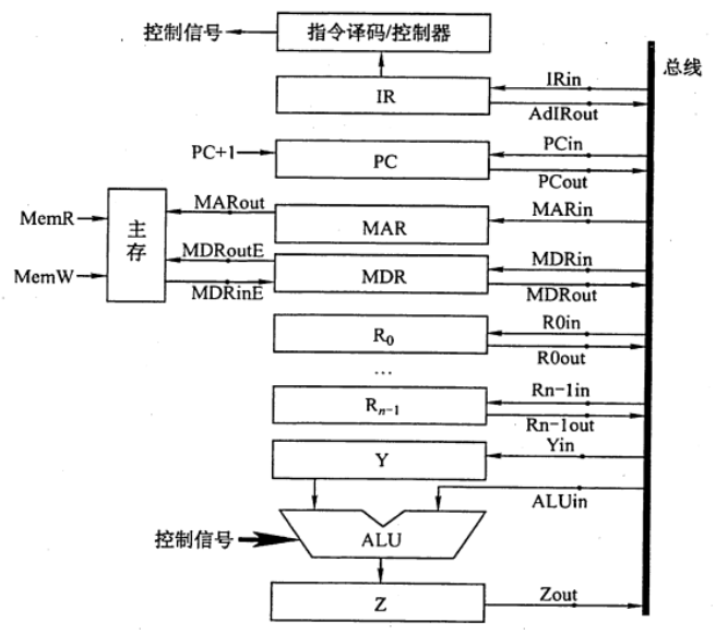
| 功能 | 有效控制信号 |
|---|---|
| 【取指周期】 | |
(PC)->MAR |
PCout, MARin |
M(MAR)->MDR |
MARout, MREAD, MDRin |
(MDR)->IR |
MDRout, IRin |
(PC)+1->PC |
+1 |
| 【间指周期】 | |
(R0)->MAR |
R0out, MARin |
M(MAR)->MDR |
MARout, MREAD, MDRin |
(MDR)->Y |
MDRout, Yin |
| 【执行周期】 | |
(Y)+(R1)->Z |
Yout, R1out, Zin, 加 |
(Z)->MDR |
Zout, MDRin |
(MDR)->M(MAR) |
MWRITE, MDRout, MARout |
下图是一个简化的 CPU 与主存连接结构示意图（图中省略了所有的多路选择器）。其中有一个累加寄存器(ACC)、一个状态数据寄存器和其他 4 个寄存器：主存地址寄存器（MAR）、主存数据寄存器（MDR）、程序寄存器（PC）和指令寄存器（IR），各部件及其之问的连线表示数据通路，箭头表示信息传递方向.
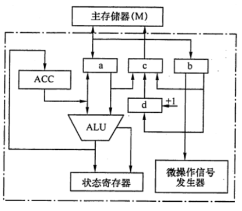
要求
【答案】：a：MDR，b：IR，c：MAR，d：PC
【答案】：
| 功能 | 有效控制信号 |
|---|---|
| (PC)->MAR | PCout, MARin |
| M(MAR)->MDR | MARout, MDRin, MR |
| MDR->IR | MDRout, IRin |
【答案】：
MAR(先置数据地址), 主存M->MDR->ALU->ACC
MAR(先置数据地址), ACC->MDR->主存M
(X)->ACC).【答案】：
X->MAR->主存->MDR->ALU->ACC
(ACC)+(Y)->ACC).【答案】：
Y->MAR->主存->MDR->ALU->ACC
ACC->ALU->ACC
(ACC)->Z)。【答案】:
Z->MAR
ACC->MDR->主存
某机主要功能部件如下图所示，其中 M为主存，MDR 为主存数据寄存器，MAR 为主存地址寄存器，R 为指令寄存器，PC 为程序计数器（并假设当前指令地址在PC中），R0~R3为通用寄存器，C、D为暂存器。
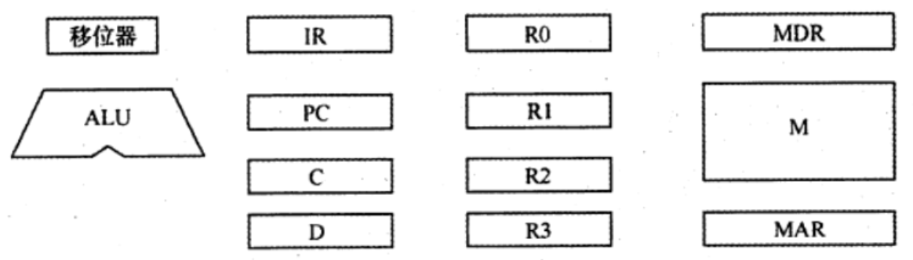
【答案】：
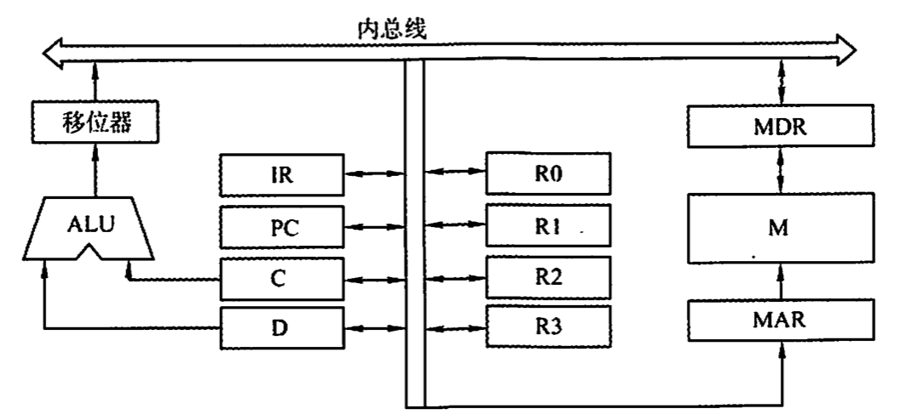
ADD (R1)，(R2)+”指令周期流程图 “该指令的含义是进行求和运算，源操作数地址在 R1 中，目标操作数寻址方式为自增型寄存器问接寻址方式（先取地址后加1），并将相加结果写回R2 寄存器。【答案】：
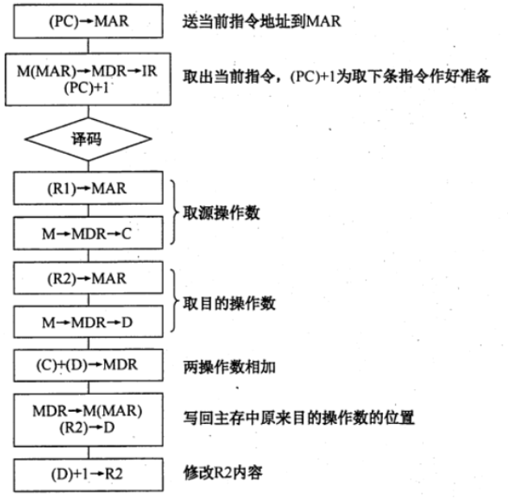
已知单总线计算机结构如下图所示，其中M 为主存，XR为变址寄存器，EAR 为有效地址寄存器，LATCH 为暂存器。假设指令地址已存在于PC中，请给出ADD X, D指令周期信息流程和相应的控制信号。说明：
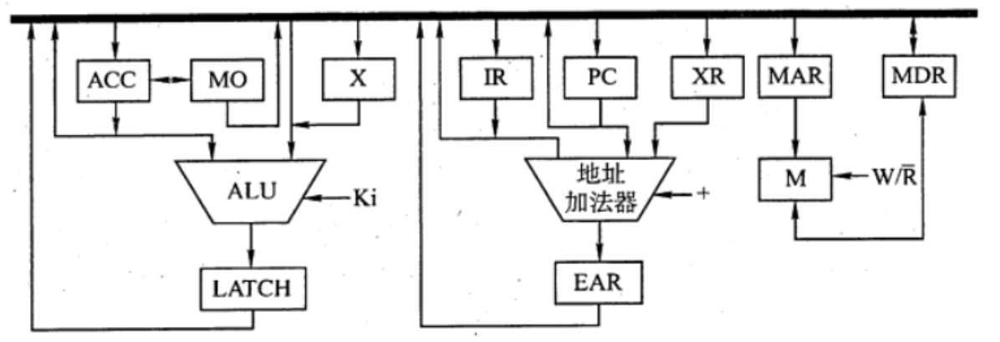
【答案】：
| 功能 | 有效控制信号 |
|---|---|
| 取指周期 | |
| (PC)->MAR | PCo, MARi |
| M(MAR)->MDR | MARo, MDRi, MR |
| (MDR)->IR | MDRo, IRi |
| (PC)+1->PC | +1 |
| 执行周期 | |
| (XR)+Ad(IR)->EAR | XRo, IRo, +, EARi |
| (EAR)->MAR | EARo, MARi |
| M(MAR)->MDR | R, MARo, MDRi |
| (MDR)->X | MDRo, Xi |
| (ACC)+(X)->LATCH | ACCo, Xo, LATCHi, + |
| (LATCH)->ACC | LATCHo, ACCi |
【2015统考真题】某16位计算机的主存按宇节编码，存取单位为16位；来用16位定长指令字格式；CPU来用单总线结构，主要部分如下图所示。图中R0-R3为通用寄存器；T为暂存器；SR为移位寄存器，可实现直送（mov)、左移一位（left）和右移一位(right）三种操作，控制信号为SRop，SR的输出由信号SRout控制； ALU可实现直送A(mova）、A加B （add）、A减B（sub）、 A与B （and )A或B（or)、非A (not )、A加1(inc）七种操作，控制信号为ALUop。 回答下列问题：
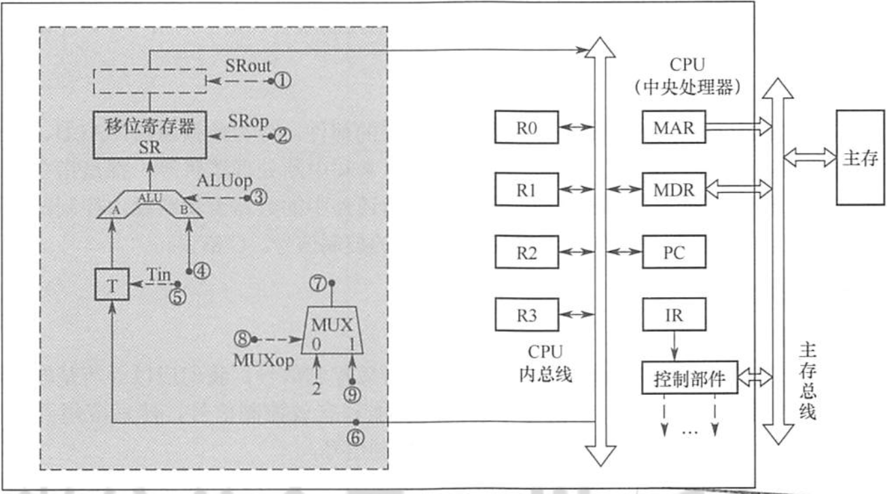
【答案】：
R0,R1,R2,R3,~~MAR,MDR~~,PC。为什么要T，因为采用了单总线结构，如果没有T，A与B会同时收到传入的数据。
ALUop7种->3位；SROp4种->2位
信号 SRout 所控制的部件是一个三态门，用于控制移位器与总线之问数据通路的连接与断开
1，2，3，5，8；
6->9；7->4
因为每条指令长度是16bits，按字节编址，顺序执行的时候，(PC)+2->PC，MUX一个输入为2，可便于执行(PC)+2操作
本题讲解:
【【408考研】历年计组大题串讲】 https://www.bilibili.com/video/BV1Lq4y167rX?p=9